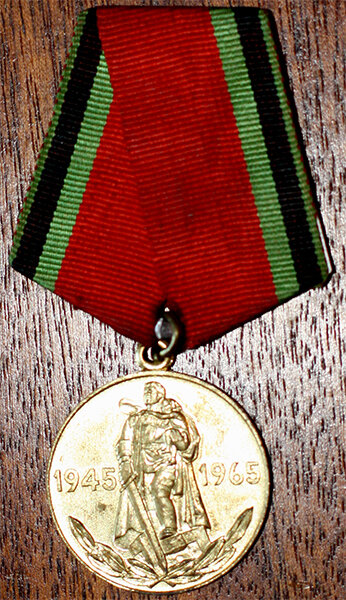
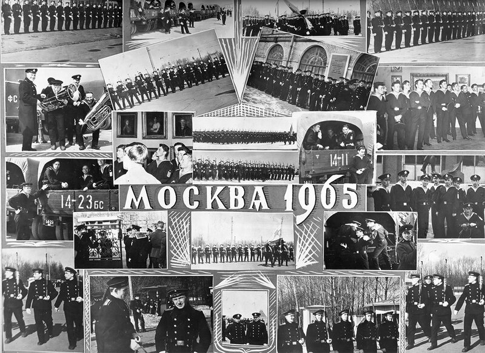

 <div style="text-align:left"><span style="font-size: medium;">Это был не знаменитый парад Победы 1945 года, но он стал вторым в истории парадом, посвященным Победе. Парад 1965 года. Наше училище выбрали представлять на нем Военно-морской флот. Ради этого перенесли выпуск с июня не сентябрь, чтобы компенсировать месяцы, затраченные на тренировки: на атомный подводный флот нельзя было направлять недоучек. Нам всем перед парадом вручили юбилейную медаль, посвященную 20-летию Победы.<br/><div style="text-align:center"></div><br/>Хотя по статусу медали ею награждали только офицерский состав, а нас еще не произвели в лейтенанты, специальным приказом Министра обороны медаль вручили абсолютно всем участникам того парада.<br/><br/>Тренировки, привычные для сухопутных войск, для моряков были нелегким трудом. Но где моряки ни пропадали!<br/><div style="text-align:center"><a href="http://img-fotki.yandex.ru/get/6447/64152229.1f/0_a5dee_b2c49be5_orig" target="_blank" target="_blank" rel="nofollow"></a></div><br/><p align="center"><span style="font-size: small;">(фото кликабельно)</span></p><br/><br/>С праздником!</span></div> 